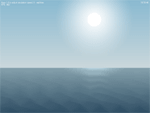
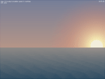
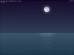

Tutorial 08 - The Big Calm
This tutorial demonstrates usage of special effects and complex lighting simulation.



Shades of the Sky
To render the sky we use a sprite without texture:
hgeSprite *sky;
sky=new hgeSprite(0, 0, 0, SCREEN_WIDTH, SKY_HEIGHT);
It's top and bottom vertices are tinted into different colors, resulting in smooth transition:
hgeColor colSkyTop;
hgeColor colSkyBtm;
sky->SetColor(colSkyTop.GetHWColor(), 0);
sky->SetColor(colSkyTop.GetHWColor(), 1);
sky->SetColor(colSkyBtm.GetHWColor(), 2);
sky->SetColor(colSkyBtm.GetHWColor(), 3);
sky->Render(0, 0);
The sky colors depend on time of day and are calculated by interpolation
between several constant tints:
hgeColor col1, col2;
col1.SetHWColor(skyTopColors[seq[seq_id]]);
col2.SetHWColor(skyTopColors[seq[seq_id+1]]);
colSkyTop=col2*seq_residue + col1*(1.0f-seq_residue);
col1.SetHWColor(skyBtmColors[seq[seq_id]]);
col2.SetHWColor(skyBtmColors[seq[seq_id+1]]);
colSkyBtm=col2*seq_residue + col1*(1.0f-seq_residue);
The Sea and Waves
The same coloring technique is used for the sea. But this time we use
hgeDistortionMesh class instead
of hgeSprite to allow waves simulation:
hgeDistortionMesh *sea;
sea=new hgeDistortionMesh(SEA_SUBDIVISION, SEA_SUBDIVISION);
sea->SetTextureRect(0, 0, SCREEN_WIDTH, SCREEN_HEIGHT-SKY_HEIGHT);
To create waves we set a displacement and tint for every distortion mesh node
(we skip first and last line for now as we don't want them to move):
for(i=1; i<SEA_SUBDIVISION-1; i++)
{
// these are constants for each vertices line
a=float(i)/(SEA_SUBDIVISION-1);
col1=colSeaTop*(1-a)+colSeaBtm*a;
dwCol1=col1.GetHWColor();
fTime=2.0f*hge->Timer_GetTime();
a*=20;
for(j=0; j<SEA_SUBDIVISION; j++)
{
sea->SetColor(j, i, dwCol1);
dy=a*sinf(seaP[i]+ // precalculated phase shift
(float(j)/(SEA_SUBDIVISION-1)-0.5f)*M_PI*16.0f-fTime);
sea->SetDisplacement(j, i, 0.0f, dy, HGEDISP_NODE);
}
}
Now we set tints for previously skipped first and last lines of distortion mesh nodes:
dwCol1=colSeaTop.GetHWColor();
dwCol2=colSeaBtm.GetHWColor();
for(j=0; j<SEA_SUBDIVISION; j++)
{
sea->SetColor(j, 0, dwCol1);
sea->SetColor(j, SEA_SUBDIVISION-1, dwCol2);
}
The sea is ready now and we render it with just one call:
sea->Render(0, SKY_HEIGHT);
In actual source code a light path from moon and sun is also simulated.
To do this we just add a bit of white tint into distortion mesh nodes
that are currently under the sun/moon.
Celestial Bodies
Stars, moon and sun are just scaled and tinted sprites:
hgeSprite *sun;
hgeSprite *moon;
hgeSprite *star;
sun=new hgeSprite(texObjects,81,0,114,114);
sun->SetHotSpot(57,57);
moon=new hgeSprite(texObjects,0,0,81,81);
moon->SetHotSpot(40,40);
star=new hgeSprite(texObjects,72,81,9,9);
star->SetHotSpot(5,5);
The interesting part about them are halos and reflection
on the sea surface. These are just sprites too:
hgeSprite *glow;
hgeSprite *seaglow;
glow=new hgeSprite(texObjects,128,128,128,128);
glow->SetHotSpot(64,64);
glow->SetBlendMode(BLEND_COLORADD | BLEND_ALPHABLEND);
seaglow=new hgeSprite(texObjects,128,224,128,32);
seaglow->SetHotSpot(64,0);
seaglow->SetBlendMode(BLEND_COLORADD | BLEND_ALPHAADD);
Note that halo sprites use different blending modes to achieve proper coloring.
Also note that both sprites share the same texture region.
The sun and the moon positions, scaling and tints are calculated in
UpdateSimulation function and then they are rendered in RenderSimulation:
glow->SetColor(colSunGlow.GetHWColor());
glow->RenderEx(sunX, sunY, 0.0f, sunGlowS);
sun->SetColor(colSun.GetHWColor());
sun->RenderEx(sunX, sunY, 0.0f, sunS);
glow->SetColor(colMoonGlow.GetHWColor());
glow->RenderEx(moonX, moonY, 0.0f, moonGlowS);
moon->SetColor(colMoon.GetHWColor());
moon->RenderEx(moonX, moonY, 0.0f, moonS);
The same for sea reflection:
seaglow->SetColor(colSeaGlow.GetHWColor());
seaglow->RenderEx(seaGlowX, SKY_HEIGHT,
0.0f, seaGlowSX, seaGlowSY);
Note that sea reflection sprite is scaled non proportionally.
Performance
Despite visual complexity this tutorial runs at rather high FPS. This is
possible because when rendering sprites via Direct3D the bottleneck
is texture bandwidth. And this tutorial renders just several sprites from
one small texture. Large screen areas are filled with flat color.
The complete source code with detailed comments for this tutorial you may find in the folder
tutorials\tutorial08. The required media files you'll find in the folder tutorials\precompiled.
Use keys 1 to 9 to change simulation speed, 0 for real time and ESC to exit.
|